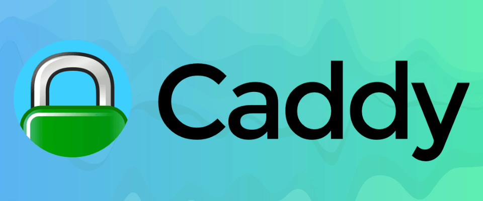

Estoy utilizando caddy para generar los certificados de mis servicios. El certificado TLS para mi servidor de ejabberd ha caducado, así que me toca renovarlo. En su día utilicé traefik, pero como ahora utilizo caddy, aunque he leído algo para hecerlo automatizado, he querido salir del paso y crear el archivo ejabberd.pem a partir de los dos archivos .crt y .key que crea caddy.

Hay dos formas de hacerlo, el primero funciona seguro, porque tanto yo como la fuente donde he extradido esta información, nos ha funcionado. El segundo método estaba publicado y yo también lo hago para dejarlo de referencia.
El primer método es el siguiente.
Cambia hostname por la url de tu servidor, midominio.duckdns.org.
Otro método
En la fuente gist, primero ponía el archivo .crt y después el .key. Yo lo he puesto al revés porque he leído en algunos hilos debía ir así y la verdad es que de este modo, a mi me funciona perfectamente.
El segundo método yo no he probado y en la fuente comenta que nunca le ha funcionado en los servidores que configuró, pero aquí está como referencia:
openssl x509 -in hostname.crt -inform DER -out hostname.crt.pem -outform PEM
openssl rsa -in hostname.key -out hostname.key.pem -outform PEMLuego, para crear el .pem, generalmente usa solo con cat los dos junto con el certificado con formato PEM primero y la clave en segundo lugar.
Publicado por Angel el Thursday 25 March del 2021
También te puede interesar:
Powered by org-bash-blog
Written in OrgMode with Emacs and converted to HTML with Pandoc

Este obra está bajo una licencia de Creative Commons Reconocimiento-NoComercial-CompartirIgual 4.0 Internacional.